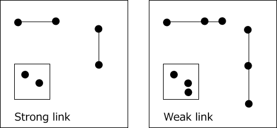
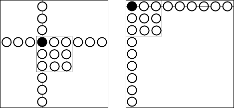

Inter-cell link
There are two types of inter-cell links: strong links and weak links.
- Strong link is a state in which there are two cells with a noted number in one House.
The left figure shows a strong link of rows, columns, and blocks.
For a strong link, one cell is "X" propagates "Not X" to the other cell.
Also, "Not X" propagates to the other cell as "X"
- Weak link is a state where there are three or more cells with the noted number X in one House.
The right figure shows a weak link of rows, columns, and blocks.
On a weak link, when a cell is "X", the remaining cells propagate as "not X".
Strong link is also Weak link.

Inter-cell link class(UCellLink)
The element class of the inter-cell link is defined as the inner class of the GNPZ_Analyzer class.
public class UCellLink: IComparable{
public int ID; //The initial value is tfx. External reconfiguration.
public int tfx;
public int type;
public bool SFlag; //T:Strong
public bool LoopFlag; //Last Link
public bool BVFlag; //bivalue Link
public readonly int no;
public readonly UCell UCe1;
public readonly UCell UCe2;
public int rc1{ get{ return UCe1.rc; } }
public int rc2{ get{ return UCe2.rc; } }
public readonly Bit81 B81;
public UCellLink(){}
public UCellLink( int tfx, int type, int no, UCell UCe1, UCell UCe2, bool SFlag=false ){
this.tfx=tfx; this.type=type; this.no=no; this.SFlag=SFlag;
this.UCe1=UCe1; this.UCe2=UCe2; this.ID=tfx;
BVFlag = UCe1.FreeBC==2 && UCe2.FreeBC==2;
B81=new Bit81(rc1); B81.BPSet(rc2);
}
public UCellLink Reverse(){
UCellLink ULK=new UCellLink(tfx,type,no,UCe2,UCe1,SFlag);
return ULK;
}
public int CompareTo( object obj ){
UCellLink Q = obj as UCellLink;
if( this.type!=Q.type ) return (this.type-Q.type);
if( this.no !=Q.no ) return (this.no-Q.no);
if( this.rc1 !=Q.rc1 ) return (this.rc1-Q.rc1);
if( this.rc2 !=Q.rc2 ) return (this.rc2-Q.rc2);
return (this.ID-Q.ID);
}
public override bool Equals( object obj ){
UCellLink Q = obj as UCellLink;
if( Q==null ) return true;
if( this.type!=Q.type || this.no!=Q.no ) return false;
if( this.rc1!=Q.rc1 || this.rc2!=Q.rc2 ) return false;
return true;
}
public override string ToString(){
string st="ID:"+ID.ToString().PadLeft(2)+ " type:"+type +" no:"+no;
st += " rc1:"+rc1.ToString().PadLeft(2)+ " rc2:"+rc2.ToString().PadLeft(2);
return st;
}
}
Inter-cell link Management class(CellLinkMan)
Inter-cell link management class. It has supplementary functions for generating links and using links.
public class CellLinkMan{
private GNPX_AnalyzerMan pAnMan;
private List<UCell> pBDL{ get{ return pAnMan.pBDL; } }
private Bit81[] pHouseCells;
public int SWCtrl;
public List<UCellLink>[] CeLK81;//cell Link
public CellLinkMan( GNPX_AnalyzerMan pAnMan ){
this.pAnMan = pAnMan;
this.pHouseCells = AnalyzerBaseV2.HouseCells;
SWCtrl=0;
}
public void Initialize(){ SWCtrl=0; }
public void PrepareCellLink( int swSW ){
if( (swSW.DifSet(SWCtrl))==0 ) return;
if( SWCtrl==0 ) CeLK81=new List<UCellLink>[81];
_SrtongLinkSearch(true); //strong link
_WeakLinkSearch( ); //weak link
SWCtrl |= swSW;
int IDX=0;
foreach( var P in CeLK81 ){
if(P!=null){ P.Sort(); P.ForEach(Q=> Q.ID=(++IDX) ); }
}
}
public void ResetLoopFlag(){
foreach( var P in CeLK81.Where(p=>p!=null) ){ P.ForEach(Q=>Q.LoopFlag=false); }
}
private void _SrtongLinkSearch( bool weakOn ){
for( int tfx=0; tfx<27; tfx++ ){
for( int no=0; no<9; no++){
int noB = 1<<no;
List<UCell> PLst = pBDL.IEGetCellInHouse(tfx,noB).ToList();
if( PLst.Count!=2 ) continue;
UCell UC1=PLst[0], UC2=PLst[1];
SetLinkList(tfx,1,no,UC1,UC2);
SetLinkList(tfx,1,no,UC2,UC1);
if( weakOn ){
SetLinkList(tfx,2,no,UC1,UC2);
SetLinkList(tfx,2,no,UC2,UC1);
}
}
}
#region Debug Print
// foreach( var P81 in CeLK81.Where(p=>p!=null) ) P81.Sort();
// __NLPrint( CeLK81 );
#endregion Debug Print
}
private void _WeakLinkSearch( ){
for( int tfx=0; tfx<27; tfx++ ){
for( int no=0; no<9; no++){
int noB = 1<<no;
List<UCell> PLst = pBDL.IEGetCellInHouse(tfx,noB).ToList();
if( PLst.Count<=2 ) continue;
bool SFlag=(PLst.Count==2);
for( int n=0; n<PLst.Count-1; n++){
UCell UC1=PLst[n];
for( int m=n+1; m<PLst.Count; m++ ){
UCell UC2=PLst[m];
SetLinkList(tfx,2,no,UC1,UC2,SFlag);
SetLinkList(tfx,2,no,UC2,UC1,SFlag);
}
}
}
}
#region Debug Print
// foreach( var P81 in CeLK81.Where(p=>p!=null) ) P81.Sort();
// __NLPrint( CeLK81 );
#endregion Debug Print
}
private void __NLPrint( List<UCellLink>[] CeLkLst ){
WriteLine();
int nc=0;
foreach( var P81 in CeLkLst.Where(p=>p!=null) ){
foreach( var P in P81 ){
int type = P.type;
int no = P.no;
int rc1 = P.rc1;
int rc2 = P.rc2;
string st = " No:" + (nc++).ToString().PadLeft(3);
st += " type:" + type + " no:" + (no+1);
if( type <= 2 ){
st += " rc[" + rc1.ToString("00") + "]r" + ((rc1/9)+1);
st += "c" + ((rc1%9)+1) + "-b" + (rc1.ToBlock()+1);
st += " --> rc[" + rc2.ToString("00") + "]r" + ((rc2/9)+1);
st += "c" + ((rc2%9)+1) + "-b" + (rc2.ToBlock()+1);
}
else{
st += " " + ((rc1<10)? "r"+rc1: "c"+(rc1-10));
st += ((rc2<10)? "r"+rc2: "c"+(rc2-10));
}
WriteLine(st);
}
}
}
public void SetLinkList( int tfx, int type, int no, UCell UC1, UCell UC2, bool SFlag=false ){
var LK =new UCellLink(tfx,type,no,UC1,UC2,SFlag);
int rc1=UC1.rc;
if( CeLK81[rc1]==null ) CeLK81[rc1]=new List<UCellLink>();
if( !CeLK81[rc1].Contains(LK) ) CeLK81[rc1].Add(LK);
}
public bool ContainsLink( UCellLink LK ){
List<UCellLink> P=CeLK81[LK.rc1];
return (P!=null && P.Contains(LK));
}
public IEnumerable<UCellLink> IEGetCellInHouse( int typB ){
foreach( var P in CeLK81.Where(p=>p!=null) ){
foreach( var Q in P.Where(q=>((q.type&typB)>0)) ) yield return Q;
}
}
public IEnumerable<UCellLink> IEGetNoType( int no, int typB ){
foreach( var P in CeLK81.Where(p=>p!=null) ){
foreach( var Q in P.Where(q=>((q.no==no)&&(q.type&typB)>0)) ) yield return Q;
}
}
public IEnumerable<UCellLink> IEGetRcNoType( int rc, int no, int typB ){
var P=CeLK81[rc];
if( P==null ) yield break;
foreach( var LK in P.Where(p=> ((p.no==no)&&(p.type&typB)>0)) ){
yield return LK;
}
yield break;
}
public IEnumerable<UCellLink> IEGet_CeCeSeq( UCellLink LKpre ){
var P=CeLK81[LKpre.rc2];
if( P==null ) yield break;
foreach( var LKnxt in P ){
if( Check_CellCellSequence(LKpre,LKnxt) ) yield return LKnxt;
}
yield break;
}
public IEnumerable<UCellLink> IEGetRcNoBTypB( int rc, int noB, int typB ){
var P=CeLK81[rc];
if( P==null ) yield break;
foreach( var LK in P ){
if( ((1<<LK.no)&noB)>0 && ((LK.type&typB)>0) ) yield return LK;
}
yield break;
}
public bool Check_CellCellSequence( UCellLink LKpre, UCellLink LKnxt ){
int noP=LKpre.no, noN=LKnxt.no;
UCell UCX=LKpre.UCe2;
switch(LKpre.type){
case 1:
switch(LKnxt.type){
case 1: return (noP!=noN); //S->S
case 2: return (noP==noN); //S->W
}
break;
case 2:
switch(LKnxt.type){
case 1: return (noP==noN); //W->S
case 2: return ((noP!=noN)&&(UCX.FreeBC==2)); //W->W
}
break;
}
return false;
}
}
Referencing related cells（ConnectedCells）
Reference all cells involved from one cell (variable ConnectedCells of type Bit 81 [])
Use it for influence zone seen from the cell,
or for confirming that common house is not between two cells.
ConnectedCells is an array of Bit81(class),
and elements can set operation with other Bit81 variables.
This array is used in various analysis algorithms.
These are defined as static functions of the base class of the analysis algorithm.

public partial class AnalyzerBaseV2{
static public Bit81[] ConnectedCells; //Connected Cells
//static public Bit81[] ConnectedCellsRev; //Connected Cells Reverse (not use in GNPZ_sdk!!)
static public Bit81[] HouseCells; //Row(0-8) Collumn(9-17) Block(18-26)
static private void SetConnectedCells(){
if( ConnectedCells!=null ) return;
ConnectedCells = new Bit81[81];
// ConnectedCellsRev = new Bit81[81];
for( int rc=0; rc<81; rc++ ){
Bit81 BS = new Bit81();
foreach( var q in __IEGetCellsConnectedRC(rc) ) BS.BPSet(q);
BS.BPReset(rc);
ConnectedCells[rc] = BS;
// ConnectedCellsRev[rc] = BS ^ 0x7FFFFFF;
}
HouseCells = new Bit81[27];
for( int tfx=0; tfx<27; tfx++ ){
Bit81 tmp=new Bit81();
foreach( var q in __IEGetCellInHouse(tfx) ) tmp.BPSet(q);
HouseCells[tfx] = tmp;
}
}
static private IEnumerable<int> __IEGetCellsConnectedRC( int rc ){
int r=0, c=0;
for( int kx=0; kx<27; kx++ ){
switch(kx/9){
case 0: r=rc/9; c=kx%9; break; //row
case 1: r=kx%9; c=rc%9; break; //collumn
case 2: int b=rc/27*3+(rc%9)/3; r=(b/3)*3+(kx%9)/3; c=(b%3)*3+kx%3; break;//block
}
yield return r*9+c;
}
}
static private IEnumerable<int> __IEGetCellInHouse( int tfx ){ //nx=0...8
int r=0, c=0, tp=tfx/9, fx=tfx%9;
for( int nx=0; nx<9; nx++ ){
switch(tp){
case 0: r=fx; c=nx; break; //row
case 1: r=nx; c=fx; break; //collumn
case 2: r=(fx/3)*3+nx/3; c=(fx%3)*3+nx%3; break; //block
}
yield return (r*9+c);
}
}
#endregion Connected Cells
}